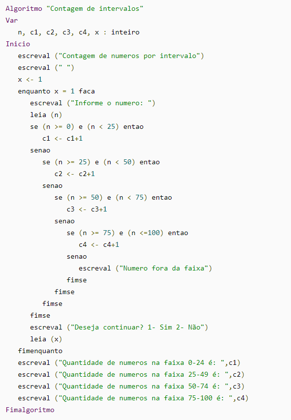
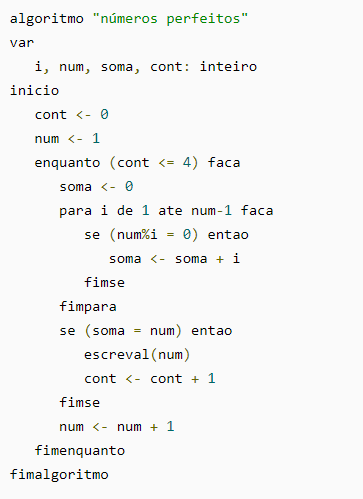
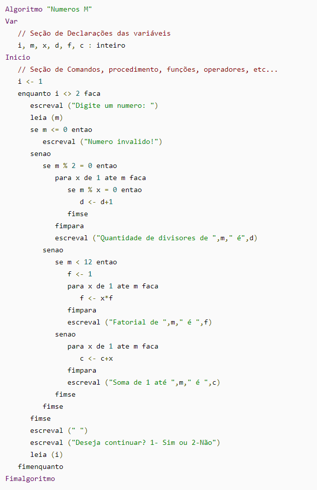
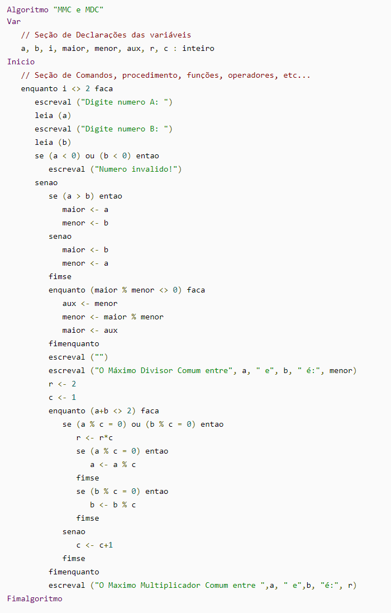

Escrever um algoritmo que lê um número desconhecido de valores, um de cada vez, e conta quantos deles estão em cada um dos intervalos [0,25], (25,50], (50,75], (75,100].
Escrever um algoritmo que leia informações sobre um grupo de 250 pessoas e calcule alguns dados estatísticos. Para cada pessoas do grupo deve ler o nome da pessoa, a altura, o peso e o sexo (“F” para feminino e “M” para o masculino). Calcular e escrever:
- A quantidade total de homens e mulheres e o percentual de cada.
- A média de peso das pessoas (somatório dos pesos de todas as pessoas pela quantidade de pessoas)
- O nome da pessoa mais alta.
Escrever um algoritmo que gera e escreve os 4 primeiros números perfeitos. Um número perfeito é aquele que é igual à soma dos seus divisores. Ex: 6 = 1+2+3, 28 = 1+2+4+7+14.
Escrever um algoritmo que lê um número não determinado de valores para m, todos inteiros e positivos, um de cada vez. Se m for par, verificar quantos divisores possui e escrever esta informação. Se m for ímpar e menor do que 12 calcular e escrever o fatorial de m. Se m for ímpar e maior ou igual a 12 calcular e escrever a soma dos inteiros de 1 até numero lido.
Faça um algoritmo que gere uma tabela com os números de 1 a 10 e mostre o seu quadrado, cubo, fatorial, número de divisores e uma mensagem dizendo se o número é primo ou não. A cada 20 linhas deve ser escrito o cabeçalho novamente:
"Número Quadrado Cubo Fatorial Divisores Primo"
1 1 1 1 1 Sim
2 4 8 2 2 Sim
Escrever um algoritmo que lê um conjunto não determinado de pares de valores a, b, todos inteiros e positivos, e para cada par lido, obtém o M.D.C. e o M.M.C. de a,b, escrevendo-os juntamente com os valores lidos.
